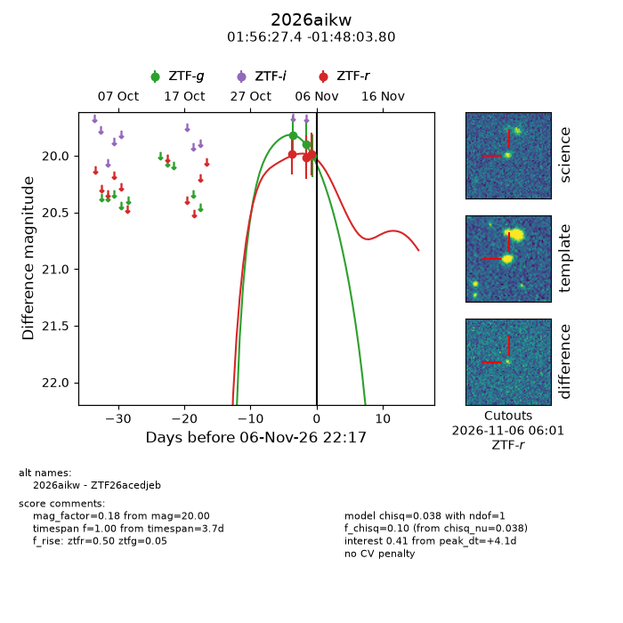
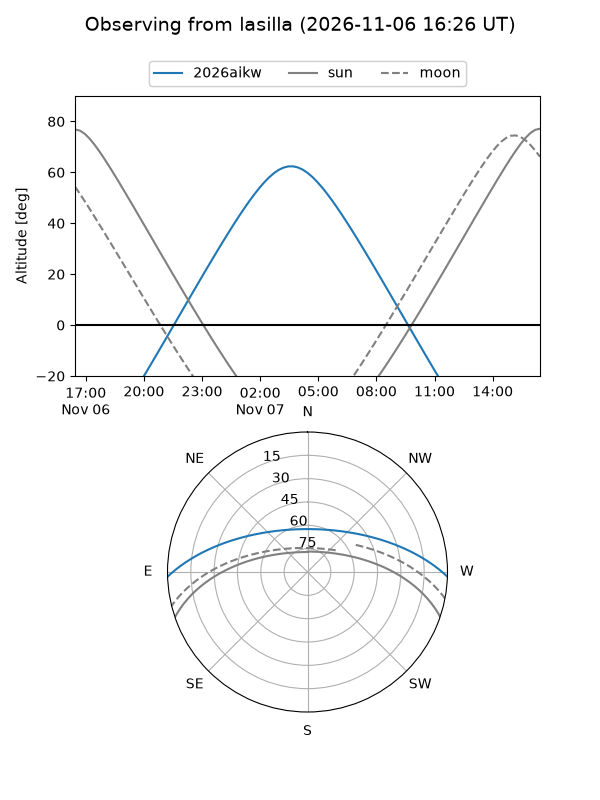
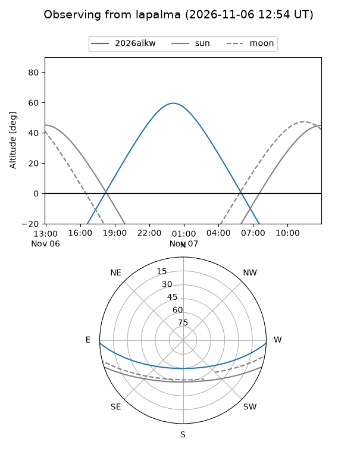
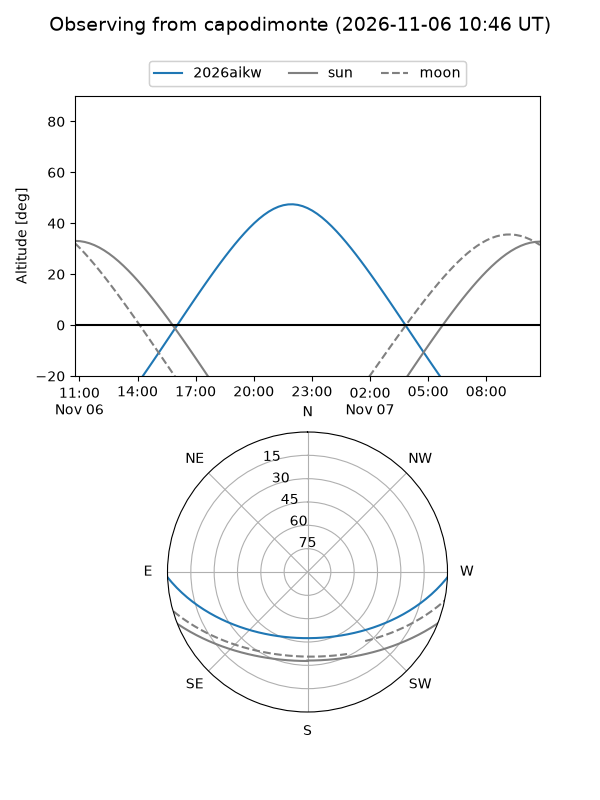
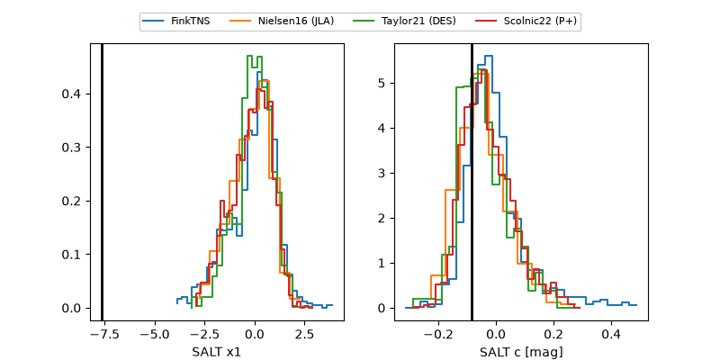

2026aikw
Target 2026aikw at 2026-11-06 22:19
Aliases and brokers:
FINK-ZTF: ztf.fink-portal.org/ZTF26acedjeb
Lasair-ZTF: lasair-ztf.lsst.ac.uk/objects/ZTF26acedjeb
ALeRCE-ZTF: alerce.online/object/ZTF26acedjeb
YSE-PZ: ziggy.ucolick.org/yse/transient_detail/2026aikw
TNS name: wis-tns.org/object/2026aikw
Direct TNS query: direct search
alt names
ZTF26acedjeb (ztf,fink_ztf)
2026aikw (tns,yse)
Coordinates:
equatorial (ra, dec) = 29.1141,-1.80106
equatorial (HMS+DMS) = 01:56:27.39,-01:48:03.80
galactic (l, b) = (157.2681,-60.26421)
Flags:
peak dt: +4.1
Photometry:
last ztfg=20.00, ztfr=19.98
3 ztfg, 3 ztfr detections
Lightcurve

Visibility



Additional plots
